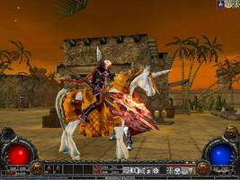
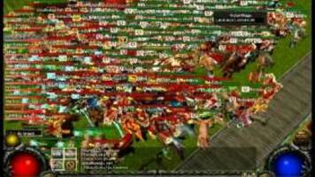
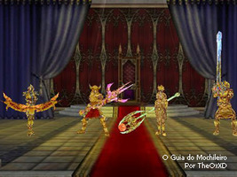

Fatos e curiosidades sobre um dos MMORPGs mais icônicos de todos os tempos. E também o jogo da minha infância.
WYD significa "With Your Destiny" e foi um dos MMORPGs mais populares da OnGame.
O jogo possui um sistema de evolução onde os personagens podem renascer e se tornar mais poderosos.
Os jogadores podem escolher entre quatro classes principais: Beast Master, Hunter, Foema e Trans Knight.



A OnGame foi uma das principais publicadoras de jogos online no Brasil, trazendo títulos como WYD, Metin2 e outros MMORPGs populares.
WYD foi um grande sucesso nos anos 2000, mas acabou perdendo espaço devido à falta de atualizações significativas, problemas com bots e a migração dos jogadores para novos títulos e principalmente o uso de "cheats" e trapaças. A falta de investimento no jogo e a concorrência com MMORPGs modernos levaram ao seu encerramento, restando apenas boas memórias e pessoas com muita esperança reproduzindo servidores "piratas" e quase idênticos ao WYD tradicional para serem jogados hoje em dia.